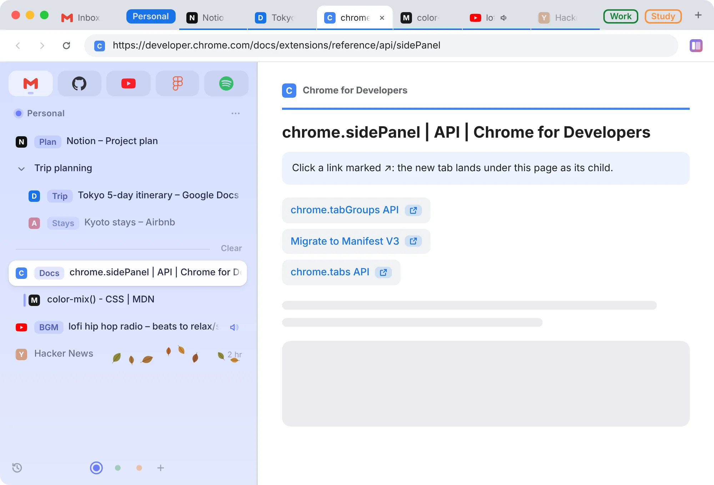
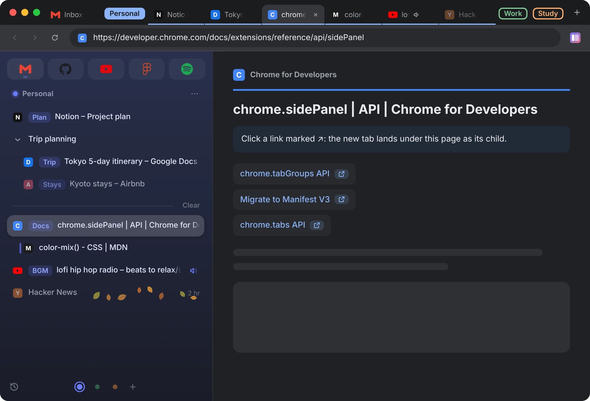
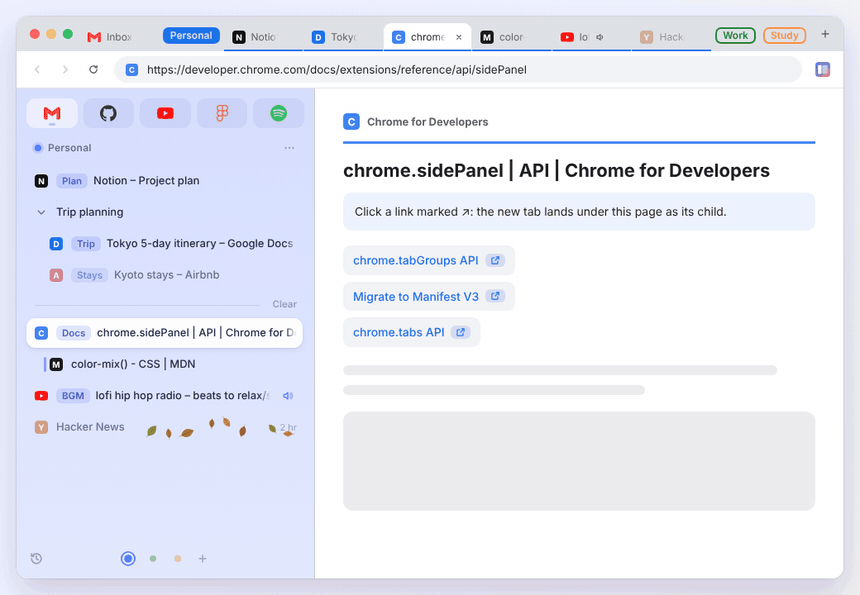
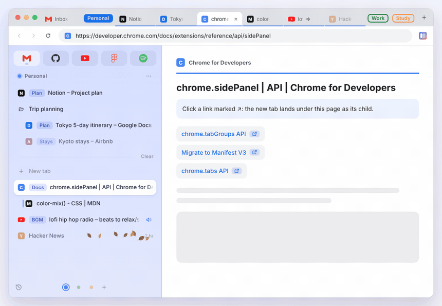
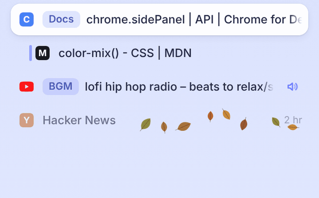

Sidearc
Sidearc
Vertical tabs
that get you.
Stacked in the side panel, split into spaces, in two-way sync with Chrome's own tab strip.


Sidearc in a minute.
Try it here. No install.
This is Sidearc's real code. Only the browser around it is simulated. Dragging needs a mouse.
Two-way sync
Not a second list.
The same one.
Chrome's tab strip follows the sidebar: drag on either side and the other one moves with it. Groups you made yourself are left alone.

Spaces
Work, study, life.
Each gets its own.
Every space has its own tabs and color, and shows up top as a tab group. Open its group or click its dot, and the whole sidebar switches.

Fallen leaves
What to close
shows itself.
Leave a tab for a day and leaves start to fall. Sweep them off, or open it and they blow away.

And plenty more.
Child tabs
Tabs land under the page you opened them from.
Pinned tabs
Keep their spot when closed; wander off and ↩ takes you home.
Footprints
The tabs you just left keep a fading mark.
Search
Press / to search tabs and recent history at once.
Keyboard
Arrow keys move a Switch-style cursor.
One tab per address
Open something already open and you jump to it.
Undo everything
Closed the wrong thing? Ctrl/⌘+Z, step by step.
Sleep
Unload a tab in one click; keep music or chat awake.
Multi-select
Pick a batch and drag, close or move them together.
Plus favorites, aliases, folders, no-history spaces, closing a tab takes you back to where you were, one click back to the current tab, restoring last session, recently closed, duplicating a tab, hard reload, light and dark, English and Chinese. Every feature in detail
No network.
Your data stays local.
No network requests, no analytics, no third-party scripts. Everything stays in your browser.
Plain JS/CSS with no dependencies, so every line is readable as is. Spaces, favorites, pinned tabs and aliases are stored locally and removed when you uninstall.
What each permission is for
- sidePanel
- The whole interface lives in the side panel.
- tabs
- Listing tabs (title, URL, icon) and switching, moving, closing and opening them.
- storage
- Saving spaces, favorites, pinned tabs, aliases and tab state for restoring after a restart.
- favicon
- Showing site icons for favorites and pinned tabs.
- search
- Searching with your default engine from the search box.
- clipboardWrite
- “Copy link address”. The clipboard is never read.
- sessions
- Restoring closed tabs on undo.
- history
- Listing matching pages from the last 30 days when you search, deleting one with ×, and removing the pages just visited from no-history spaces and folders. Read locally, never sent anywhere.
- webNavigation
- Telling whether a new tab was opened from a link on a page (child tabs) and whether its address is already open (no duplicate tabs).
- tabGroups
- Showing each space as a tab group in Chrome's tab strip and collapsing the other spaces.
Three steps to install.
Install from source: zero dependencies, the repository is the extension.
-
Clone the repository
No git? Download the zip from Releases and unzip it instead.
git clone https://github.com/winzipsdo/sidearc.git -
Load it
Open this address, turn on Developer mode (top right), click “Load unpacked” and choose the repository folder.
chrome://extensions -
Open the sidebar
Click the Sidearc toolbar icon, or press:
Alt+SWindows / Linux⌥ Option+SMac
Requires Chrome 116 or later. Not on the Chrome Web Store yet.
Updating: run git pull in the repository, then close and reopen the sidebar. The few updates that touch the background (background.js or manifest.json) also need the reload button on Sidearc's card in chrome://extensions; if unsure, reloading is harmless and keeps your spaces, favorites and settings.
Make it yours: the code is plain JS/CSS with nothing to compile. If something doesn't fit how you work, ask an AI coding assistant (such as Claude Code) to change it in the repository, say "make the rows more compact", then close and reopen the sidebar to see it.
Want the sidebar on the left, like Arc? Open chrome://settings/appearance and set the side panel position to left. It's Chrome's own setting, so the extension can't change it for you.
Shortcuts.
| Action | Windows / Linux | Mac |
|---|---|---|
| Toggle the sidebar | Alt+S | ⌥ Option+S |
| Undo (sidebar focused) | Ctrl+Z | ⌘+Z |
| Open search | / Ctrl+F | / ⌘+F |
| Keyboard cursor: move | ↑ ↓ ← → | ↑ ↓ ← → |
| Keyboard cursor: open / close / menu | Enter Delete Shift+F10 | Enter Delete Shift+F10 |
| Multi-select / range | Ctrl+click · Shift+click | ⌘+click · Shift+click |
| Close a tab | Middle-click or ✕ | Middle-click or ✕ |
The sidebar shortcut can be changed at chrome://extensions/shortcuts.